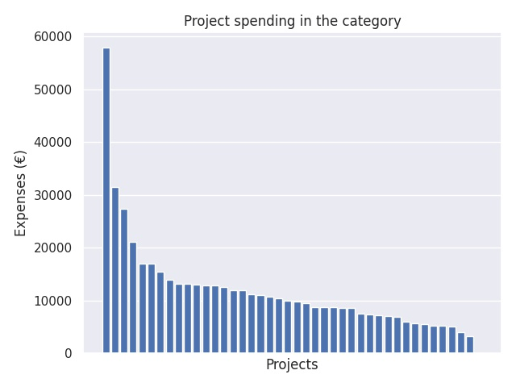

Yleissivistävän koulutuksen kansainvälistyminen, kansainvälistymisen kehittämishankkeet
Category summary
11.8K spent on average
57.9K highest spending

Reports in the category
Helsingin kaupungin opetusvirasto, 1.6. Kasvatuksen ja koulutuksen toimiala
Project name: Yleissivistävän koulutuksen kansainvälisyyspäivät 2017
57.9K spent
Karleby stad/Karleby svenska gymnasium
Project name: Nju ngiy dem - allons-y, let's go!
31.5K spent
Grankulla stads skolväsende
Project name: Kehittyvän maan virtuaalitodellisuus
27.4K spent
Vaasan kaupunki / Vaasan lyseon lukio
Project name: Let´s get global
21.2K spent
Konneveden kunta
Project name: Virtual Friends In Clouds, Oppilasyhteistyö virtuaaliluokissa
17K spent
Lappeenrannan kaupunki, kasvatus- ja opetustoimi
Project name: Kimpinen kohtaa Kiinan
17K spent
Nakkilan kunta
Project name: Better Me - Better Nakkila - Better world
15.5K spent
Salon kaupunki
Project name: Global Classroom
13.9K spent
Kuopion kaupunki
Project name: Kansainvälisyyskasvatus ja ystävyyskoulutoiminta laaja-alaisen osaamisen ja toimintakulttuurin tukena
13.2K spent
Mänttä-Vilppulan sivistystoimi
Project name: Kulttuurikasvatussalkku/Culture Bag
13.2K spent
Tampereen kaupunki/Lukiokoulutus/Hatanpään lukio
Project name: WeQ Goes Populism
13K spent
Vantaan kaupunki/ Sivistystoimi
Project name: Me maailmassa ja maailma meissä - globaali- ja kansainvälisyyskasvatuksen strategia käytäntöön
12.9K spent
Kokkolan kaupunki
Project name: Matkalle vuoteen 2030
12.9K spent
Haapajärven kaupunki
Project name: YTE III - elävät koulut: osallistaminen kestävään kehitykseen paikallisesti, alueellisesti ja kansainvälisesti
12.5K spent
Seinäjoen kaupunki, Seinäjoen lyseo
Project name: Kestävää kehitystä Etelä-Pohjanmaalta Espanjaan (KeKeEE)
12K spent
Viitasaaren kaupunki
Project name: Luontomatkailua jälkiä jättämättä
12K spent
Imatran kaupunki
Project name: Yhteisen kulttuurin uusi tulevaisuus - Den gemensamma kulturens nya framtid
11.2K spent
Ikaalisten kaupunki
Project name: Ikaalisten ja Parkanon Kiina-hanke
11.1K spent
Oulun kaupunki
Project name: Kiina ja kiinaa
10.7K spent
Joensuun kaupunki, Joensuun lyseon lukio
Project name: PROChina - Partnership Responsibility Opportunity
10.5K spent
Turun yliopisto, Kasvatustieteiden tiedekunta, Turun normaalikoulu
Project name: YK++ - Ympäristötietoisuutta, harvinaisia kieliä ja rakentavaa kansalaisaktiivisuutta
10K spent
Helsingin kaupunki, kasvatuksen ja koulutuksen toimiala
Project name: Kestävän kehityksen digitaaliset oppimisympäristöt maailmankansalaisuutta tukemassa
9.88K spent
Tampereen yliopiston normaalikoulu
Project name: Matkalla maailmankyliin, arvot kohdallaan
9.54K spent
Espoon kaupunki / Pohjois-Tapiolan lukio
Project name: Teknologia ja kansainvälinen tietotyö
8.8K spent
Raudaskylän Kristillinen Opisto ry
Project name: KOMPASSI - yhdessä yhdenvertaisina
8.78K spent
Tampereen kaupunki, kasvatus- ja opetuspalvelut
Project name: Kestävän tulevaisuuden�rakentaminen Tampereella
8.75K spent
Savitaipaleen Kunta
Project name: Energiantuotantoon liittyvät ratkaisut Suomessa ja Venäjällä ( Clean and Green technology)
8.6K spent
Porin kaupunki
Project name: Yhdistävä Itämeri - Connected by the Baltic Sea
8.57K spent
Siilinjärven kunta, Ahmon koulu
Project name: Saamelainen ja savolainen - kulttuurit tutuiksi
7.5K spent
Alavuden kaupunki
Project name: Alavuden lukion monitieteinen kansainvälistymishanke osana teemaopintokokonaisuuksien kehittämistä.
7.36K spent
Espoon kaupunki, Meritorin koulu
Project name: Kestävän kehityksen digipolku LUMA-koulussa
7.29K spent
Limingan kunta
Project name: Limingan lukion kielivaranto ja kulttuurikasvatus kukoistukseen!
7.02K spent
Alavuden kaupunki, Alavuden yläkoulu
Project name: Ruotsi, ruotsin kieli-ja kulttuuri naapurinamme
6.91K spent
Hartolan kunta, Hartolan Yhtenäiskoulu
Project name: Kamuiksi kaikille
6.04K spent
Lieksan kaupunki
Project name: GlobeFirst -hanke
5.66K spent
Virtain kaupunki
Project name: Virrat-Kirchberg, kansainvälistä yhteistyötä vuodesta 2011
5.52K spent
Keravan kaupunki, kasvatuksen ja opetuksen toimiala, Keravanjoen koulu
Project name: Yleissivistävän koulutuksen kansainvälistyminen, kansainvälistymisen kehittämishanke
5.32K spent
Kuopion kaupunki, kasvun ja oppimisen palvelualue
Project name: Peace flows, education grows; peer-mediating and learning communities as tools in global growth
5.21K spent
Lahden kaupunki
Project name: Oppilas osaksi maailmaa
5.08K spent
Helsingin Suomalainen Yhteiskoulu
Project name: Humanismi ja kielet kunniaan
3.99K spent
Lemin kunta
Project name: Rajat ylittävää ystävyyttä
3.33K spent
Lappeenrannan kaupunki, Lappeenrannan Lyseon lukio
Project name: Lappeenranta meets India: Global Earth
0 spent